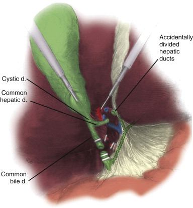
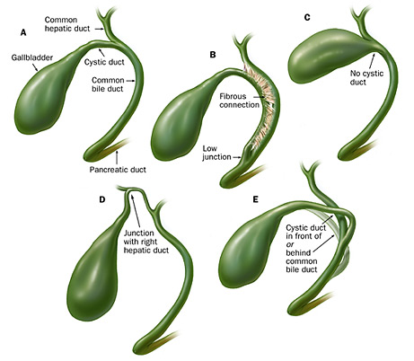
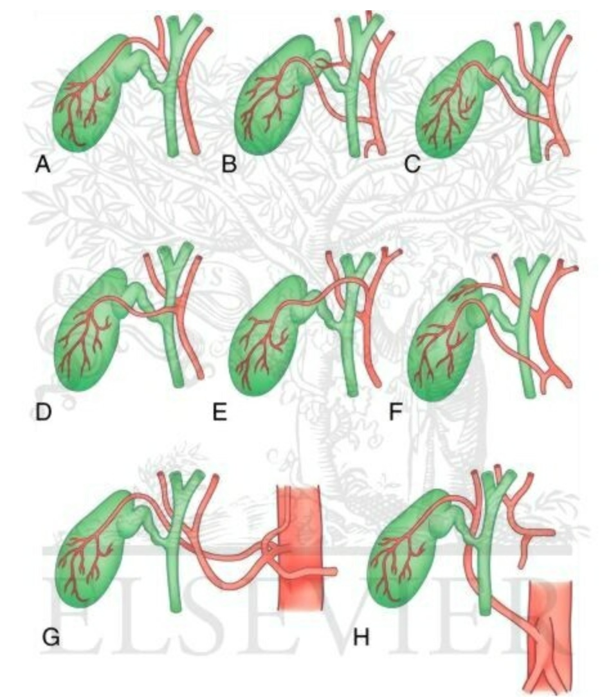
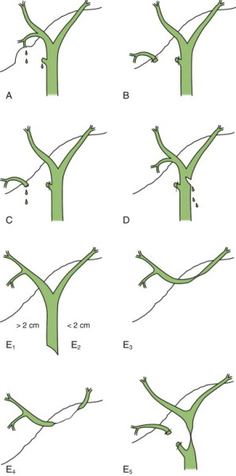

Biliary Stricture and CBD
Injury
DEFINITION
Biliary stricture and CBD injury.
D E A B M I M
EPIDEMIOLOGY
Seen not infrequently in upper GI units
D E A B M I M
AETIOLOGY
Inflammatory
- recurrent cholangitis, cholecystitis
- recurrent pancreatitis
- primary sclerosing cholangitis
Tumours
- not discussed here
Iatrogenic
- remain the most common cause
- rate after lap chole is 0.4-0.6% vs 0.2-0.3% after open
--> decreased in modern times but depends on individual volume,
skill and experience
Also seen after:
- biliary reconstruction
- hepatic resection (ischemic insult)
D E A B M I M
BIOLOGICAL BEHAVIOUR
Mechanisms of Lap Chole Bile Duct Injury
Risk Factors
Exaggerated cephalad retraction
- inadequate lateral inferior retraction
--> distortion of plane between cystic duct and CBD
--> lie parallel instead of perpendicular.
Surgeon inexperience
Use of a zero-degree scope
Inflammation
Short cystic duct
Classic injury is distal to the common hepatic - cystic jx
Associated with injuries to the right hepatic artery as same plan of
dissection

Also can put one clip on cystic, one on cbd, leading to a major
cystic stump leak and cbd obstruction.
Routine IOC has not been shown to decrease intraoperative
recognition of CBD injury
- but does assist in identifying duct anatomy and in early detection
of injury.
Common variations in biliary anatomy
Variations in ductal and vascular anatomy also adds considerable
operative risk.
- anomalous low-lying segmental duct can be mistaken for the cystic
duct.
- right hepatic duct can be at risk in its extrahepatic course.
Variations in cystic duct

Variations in the cystic artery
(From Sabiston's):

A, Most common anatomy.
B, Double cystic artery—one off the proper hepatic artery.
C, Origin off the proper hepatic artery and coursing anterior to the
bile duct.
D, Originating off of the right hepatic artery and coursing anterior
to the bile duct.
E, Originating from the left hepatic artery and coursing anterior to
the bile duct.
F, Originating off the gastroduodenal artery.
G, Originating off of the celiac axis.
H, Originating from a replaced right hepatic artery.
Classification of Bile Duct Injuries
Bismuth
First scheme developed
I = CBD transection with CHD stump >2cm
II = CHD stump <2cm
III = hepatic duct stricture with preserved continuity
IV = disruption at the hepatic duct confluence.
V = R sectoral duct transection.
Strasberg-Soper Classification
Extended classification based on Bismuth scheme (prefer this).

A = biloma / leak from cystic duct or minor hepatic duct without
loss of biliary tree continuity
B / C = aberrant right hepatic ductal anatomy draining into cystic
duct
--> misidentified as cystic duct and taken (with or without leak;
)
--> presents late (cholangitis) or early (leak) respectively
- frequently include right hepatic arterial injury.
D = lateral damage to CBD with biliary leak.
E = Common hepatic duct injury, classified by level of injury as
shown.
Consequences
Chronic biliary obstruction leads to anatomical and
physiological changes
- obstructed segments atrophy, become fibrosed.
Concomitant hypertrophy of non-obstructed segments.
Single-lobe obstruction causes rotation of parenchyma & ducts
toward injured lobe, potentially confusing imaging results.
D E A B M I M
MANIFESTATIONS
Injuries may be:
1. Discovered at time of damage
- e.g. bile leakage, IOC result, or observation
2. Discovered within a few days
- e.g. bile leak, abdo pain, fistula, jaundice
3. Discovered weeks to months later.
- e.g. insidious onset of low-grade liver injury, cholangitis,
weight loss.
Inflammatory Causes
Insidious.
Lack symptoms of cholangitis
By time of presentation may mimic biliary obstruction.
D E A B M I M
INVESTIGATIONS
IOC
Should be routine
Any anatomic variation is an indication.
LFTs
May show cholestatic obstruction, particularly ALP.
Elevate dilirubin can indicate obstruction or leak
ERCP
Prefered post op initial study
- defintes biliary anatomy and verifies injury.
- and can be therapeutic through deployment of stents etc.
- though limited if surgical Rx needed.
Other
PTC and percutaneous biliary drainage performed for CBD stricture /
transection.
- may need bilobar catheters
CT and drain any bilomas.
D E A B M I M
MANAGEMENT
1. Injuries Discovered at the Time of Surgery
Benefits of intra-operative repair:
- preserved tissue planes
- good physiologic conditions
- one procedure.
Benefits of late repair:
- possibly a dilated cystic duct
- referral to tertiary centre
Process:
1. Define the anatomy.
- IOC
2. Decide whether to repair or prefer.
- depends on competency and post-operative resources.
- need quality intensive care, diagnostic imaging, interventional
radiology, ERCP and chronic patient care resources to effectively
deal with complications.
3. Often CBD transections and resections
- complex injuries requiring hepaticojejunostomy
- best to do one good repair otherwise subsequent repairs even more
dfficult.
Principles of management for transfer.
1. Preserve duct length.
2. Prevent post-operative obstruction or leak.
3. Contact referral specialist surgeon before closure.
4. Best to leave gallbladder in place if not devascularized.
- this should be done open by an experienced surgeon to clearly
identify GB infundibulum, thus preserving maximal CBD length.
5. Leave drain in place and give antibiotic coverage
6. Transfer rapidly with radiologic imaging.
Principles of immediate repair.
1. Specialists only.
2. Repair partial CBD lacerations over a T-tube.
- not commonly possible.
3. Primary repair if no loss of length.
- complete Kocher maneuver to allow tension-free anastomosis.
- end to end single layer fine caliber absorbable suture
- place a T-tube
4. if there is any tension, convert to a Roux-en-Y
hepaticojejunostomy
- longer segments of tissue loss also require more definitive
repair; i.e. hepaticojejunostomy
Note that there are few successful immediate repairs.
2. Post-operative Management
Principles
1. Allow full recovery from sepsis and medical optimization.
- broad spectrum antibiotics
- inability to absorb fat-soluble vitamins alters PT and Vit K is
needed.
- dehydration and electrolyte abnormalities
- nutritional support if losing weight.
- address any additional comorbidities.
2. Define the anatomy
3. Biliary drainage
- either surgical or radiologic guided drainage
- cholangiogram and bile duct drains to prevent ongoing biloma
4. Surgical repair.
Presentation in early post-op period
Non-operative therapy if biliary continuity preserved.
- ERCP and stenting across injury and ampulla.
If bile duct continuity not preserved --> Roux en Y
reconstruction
- end-to end would result in bacterial colonization, scarring, poor
healing, stricturing.
Late presentations
Strictures due to partial clip occlusions, ischemia, electrical
or mechanical injury
- exposure of the healthy proximal duct and Roux en Y limb
reconstruction
Advanced endoscopy options include endoscopic dilation and stent
placement
- safe and effective in short term in the right hands
- but frequently re-occlude wihtin 3-6 months
--> 50-75% will require surgery for repeat stricturing.
- and note a 10-15% complication rate including bleeding, sepsis and
pancreatitis.
Operative Notes
Define anatomy very clearly
Approach L hepatic duct first: more consistent and followed to
assess confluence.
Remember that bile duct blood supply runs at 3 and 9 o'clock; so
approach anterior duct first.
- minimize circumferential dissections.
At confluence, determine if ducts can be reconfigured together or
must be separately dissected
- if separate, may need to dissect right duct out of parenchyma to
facilitate enough length for the repair.
Right duct repair can be complicated by early branching of the
segmental ducts;
- may need separate insertion into Roux limb of segmental ducts
4-0 pds repair, drainage through liver or T-tube (prefer a
pre-operatively placed PBD across choledochojejunostomy).
Use a 40 cm roux limb
If common channel non-existent, refashion a common channel by sewing
medial walls of left and right ducts.
--> then single biliary-enteric anastomosis and drainage of each
duct separately
- if cannot be united without tension, insert separately.
Closed-suction drain in operative field.
Prognosis
Profound morbidity; pt at risk before and after injury.
- harmed by delay in controls to fistula or abdominal sepsis.
Major complication rate of 10-20%
10-30% also get ongoing cholangitis or jaundice
- recurrent strictures are most common complication at anastomosis.
- 2/3 present within 2 year, can be very late
More favourable outcome if younger, Roux-en-Y reconstruction, no
infections of fibrosis, use of stents.
Non-Iatrogenic Benign Biliary Strictures
Chronic Pancreatitis
Often assoc with strictures along intrapancreatic ducts and
biliary tree
--> jaundice
ERCP shows anatomy.
- benign strictures taper smoothly and are us. 2-4cm long.
Most benign strictures can be managed with medical, radiologic and
endoscopic techniques.
- sphincterotomy and balloon dilation of distal CBD plays a limited
role.
If symptomatic or elevated ALP
- biliary bypass to prevent biliary cirrhosis from chronic
obstruction.
- Roux-en-y preferred.
Consider periampullary tumours
- shared symptoms
- may need biopsy of strictures repeatedly.
- pancreaticoduodenectomy becomes a treatment option if suspicious.
Marizzi
Chronic cholecystitis with benign stricture
Gallstones impacting on gallbladder neck, narrow duct and inflame,
scar, necrosis and fistula.
Relative contra-indication to Lap Chole
- must open triangle of Calot by lateral retraction of infundibulum,
but that triangle is obliterated in Mirrizi
Pts should have preop contrast studies e.g. ERCP
- open preocedure with careful dissection off duct
- if fistula, open gallbladder to prevent making it worse
--> small ones managed by closure horizontally
--> large ones by Roux-en-Y reconstruction
May get post op strictures requiring reconstruction.
D E A B M I M
REFERENCES
Cameron 10th